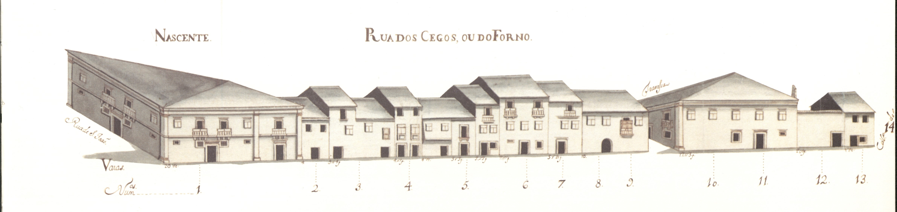

Número: 11
Nome: Rua dos Cegos ou do Forno

Rua dos Cegos ou do Forno - vista nascente.
Pequena rua, hoje parcialmente desaparecida,
que, segundo o Mappa, ligava as traseiras da
igreja do Colégio da Companhia de Jesus às da
Sé.
Era conhecida por esta designação já na
Idade Média, devido ao Forno da Infanta que se
localizava na casa do prazo n.º 12.
Estranhamente esta artéria não figura no
Tombo do Cabido (ca. de 1369-1380).
É esta uma rua da periferia da Sé, bastante
secundária, simples elo de ligação entre ruas.
Os seus edifícios, têm 2 e 3 pisos, com poucas
varandas e raras gelosias. De notar uma casa
grande na esquina da rua de S. João; outra,
duplamente sobradada na junção com a rua das
Oucias; e a janela de canto, de cariz
renascentista, do prédio grande, do gaveto
feito com a rua Pay Manta.
Das 13 casas do lado Nascente e 11 do lado
Poente, são prazos do Cabido 11 e 8
respectivamente.
Hoje muito poucas casas se conservam no lado
Este desta rua. O lado Oeste está totalmente
alterado.
A parte Sul da rua, isto é, a que vai além
da rua de Pay Manta, foi fechada ao público,
por deliberação camarária de 20-06-1896.
Actual rua do Forno.
Lista de Casas
- Casa:
- Número: 1
- Enfiteuta:
- Foro:
- Desc: Corresponde ao n.º 11 da Rua de S. João,
para onde tem a frontaria e serventia
principais e ao n.º 3 e 4 da Rua das Oussias.
- Casa:
- Número: 2
- Enfiteuta: Francisco Pereira Marinho
- Foro: 280 reis e 1 galinha
- Desc: O enfiteuta é filho de Alexandre Pereira Marinho,
sendo o emprazamento feito no ano de 1724.
A casa foi construída em 1535, em pertenças
da casa n.º 9, da Rua de S. João.
- Casa:
- Número: 3
- Enfiteuta: João Pereira do Lago
- Foro: 470 reis e 2 galinhas
- Desc: Foi construída em pertenças do n.º 9, da rua de S. João.
- Casa:
- Número: 4 e 23
- Enfiteuta: Francisco Correia, carpinteiro
- Foro: 520 reis e 2 galinhas
- Desc: A casa n.º 4 confronta, do sul,
com casa foreira à Capela de Nossa Senhora da Glória.
- Casa:
- Número: 5
- Enfiteuta: Rev. João de Sousa Lima, Mestre Escola
- Foro: 320 reis e 2 galinhas
- Desc: Confronta, do norte, com casa foreira
à Capela de Nossa Senhora da Glória e, do sul,
com casa foreira à Igreja de S. Pedro d'Este.
- Casa:
- Número: 6
- Enfiteuta: Dr. José Peixoto
- Foro: 400 reis e 2 capões
- Desc: Confronta, do norte, com casa foreira
à Igreja de S. Pedro d'Este.
- Casa:
- Número: 7
- Enfiteuta: Francisco da Costa de Mesquita, cidadão de Braga
- Foro: 120 reis e 2 galinhas
- Desc: Foi construída em 1554,em pretenças do n.º 8.
- Casa:
- Número: 8 e 9
- Enfiteuta: Lie. João Carvalho Ferreira
- Foro: 630 reis e 4 galinhas
- Desc: A casa n.º 9 confronta, do sul,
com a travessa que vai para a Rua de S. João e,
foi unida ao n.º 8, no ano de 1674.
O prazo é constituído, ainda, pelo n.º 9
da travessa da Rua de S. João
para a do Forno.
- Casa:
- Número: 10 e 11
- Enfiteuta:
- Foro:
- Desc: Corresponde ao n.º 7 da travessa
que vai para a Rua de S. João,
para onde tem a frontaria e serventia
principais. No ano de 1596,
o n.º 11 foi unido ao n.º 10,
constituindo um só prazo.
- Casa:
- Número: 12
- Enfiteuta: Carlos Magalhães de Azevedo, Cónego
- Foro: 290 reis e 2 galinhas
- Desc: Pertence ao n.º 5 da travessa da
Rua de S. João para a do Forno.
A denominação de «Forno do Infante» advém-lhe
de ter sido construída no local onde,
antes de 1481, funcionou o
antigo forno.
- Casa:
- Número: 13
- Enfiteuta: Padre Luís da Cunha, Congregado
- Foro: 60 reis e 1 galinha
- Desc:
- Casa:
- Número: 14
- Enfiteuta:
- Foro:
- Desc: Não aparece desenhada no mapa,
por ter sido demolida e incorporada no
Colégio de S. Paulo da Companhia de Jesus.
Inicialmente foi foreira à obra da Sé.
Depois de 1568, foi trocada por outra
casa do referido Colégio.
- Casa:
- Número: 15, 17, 18 e 19
- Enfiteuta:
- Foro:
- Desc: Correspondem ao n.º 1 da travessa
que vai da Rua do Forno para a
do Poço, para onde têm a frontaria e
serventia principais. No prazo da casa n.º 19
foi incorporado o n.º 15, em 1673,
e os n.º 17 e 18, em 1561.
- Casa:
- Número: 16
- Enfiteuta:
- Foro: 54 reis (de censo)
- Desc: A casa é foreira ao chantrado.
O censo é pago pelo Dr. Francisco Gomes do Couto.
- Casa:
- Número: 20
- Enfiteuta: António Barreto de Meneses
- Foro: 240 reis e 2 galinhas
- Desc: O enfiteuta sucedeu a Constantino Barreto de Meneses
e ao Rev. Abade Jerónimo de Araújo.
O n.º 20 situa-se na esquina que dá para a travessa
que vai para a Rua do Poço e
confronta, do sul, com a dita travessa e,
do norte, com casa de vínculo. O n.º 21
confronta, do Sul, com a referida casa de vínculo.
O n.º 10 da travessa da rua do Forno
para a do Poço faz parte do n.º 20.
- Casa:
- Número: 21
- Enfiteuta: António Barreto de Meneses
- Foro: 500 reis e 2 capões
- Desc: O enfiteuta sucedeu a Constantino Barreto de Meneses
e ao Rev. Abade Jerónimo de Araújo.
O n.º 20 situa-se na esquina que dá para a travessa
que vai para a Rua do Poço e
confronta, do sul, com a dita travessa e,
do norte, com casa de vínculo. O n.º 21
confronta, do Sul, com a referida casa de vínculo.
O n.º 10 da travessa da rua do Forno
para a do Poço faz parte do n.º 20.
- Casa:
- Número: 22
- Enfiteuta: Manuel Ribeiro Pereira
- Foro: 200 reis e 3 galinhas
- Desc:
- Casa:
- Número: 23
- Enfiteuta:
- Foro:
- Desc: Pertence ao n.º 4
- Casa:
- Número: 24
- Enfiteuta: Teresa da Silveira, viúva de Sebastião do Couto
- Foro: 300 reis e 2 galinhas
- Desc: O emprazamento foi feito em 1710.